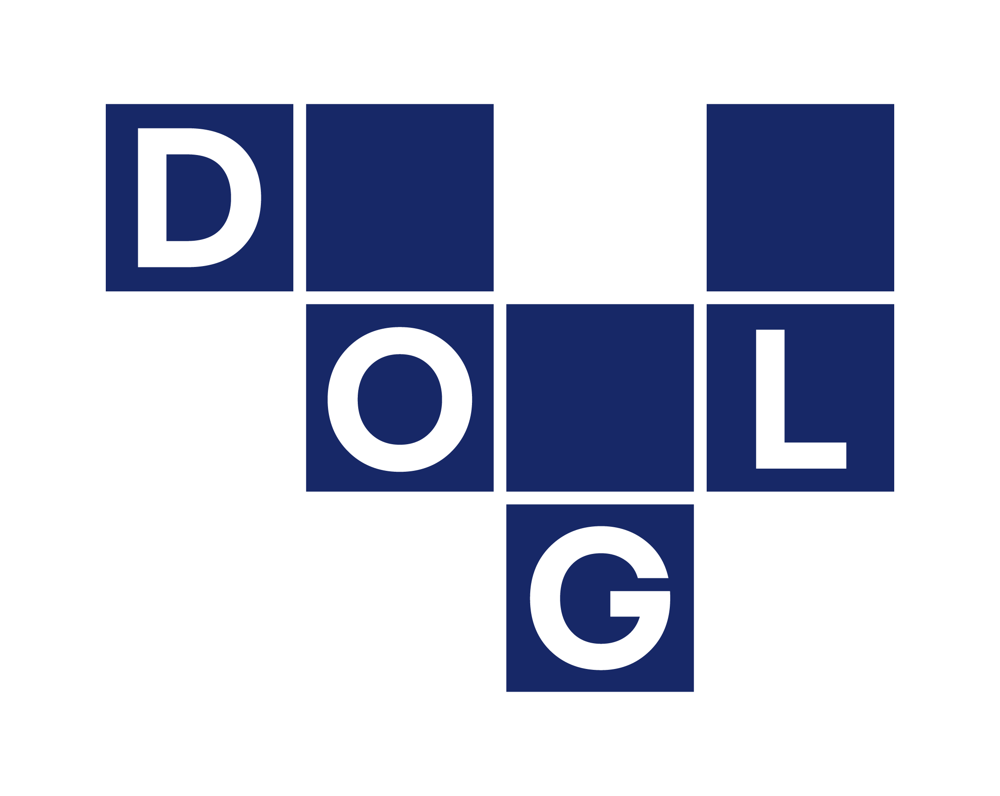
The Digital Oceans Governance Lab (DOGL) is situated at the intersection of two trends influencing the future of global oceans: a proliferation of ‘oceans data science initiatives’ (ODSIs) and increasing interest in expanded oceans policy and governance.
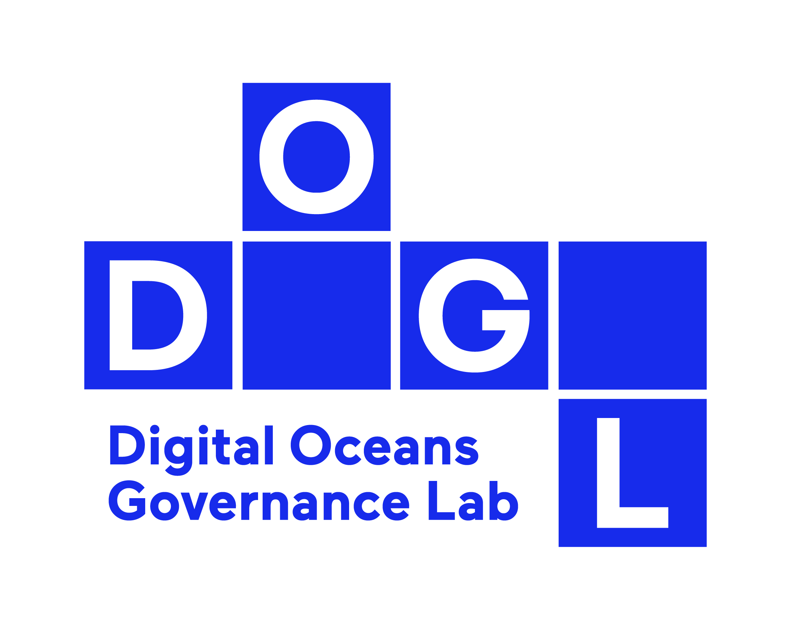
Digital information about ocean environments is proliferating — high-resolution satellite imagery, sensing platforms above and below water, electronic tags on marine animals, autonomous vehicles and drones. Advances in computing power produce powerful visualizations, data portals and products, often spatial and in real time.
Oceans are vast, multi-dimensional, and fluid — characteristics that historically have constrained human efforts to know and use them. Yet oceans are critical to environmental and social wellbeing, rich with biodiversity, and support livelihoods for people around the world.
Governance implications of renewed interest in oceans and new scientific understanding are converging. State and non-state actors mobilize new data technologies and ODSIs to expand human reach into the oceans. New governance frames — such as ‘blue economy’ and ‘blue justice’ — are also emerging.
Labs are places of research and experimentation. Our lab brings together an interdisciplinary team of human geographers, marine ecologists, geospatial data scientists and information scientists to explore the role of ODSIs in global and regional oceans governance — toward more just and sustainable ocean futures.
Ocean Data Science Initiatives
Ocean data science initiatives (ODSIs) are led by scientists, non-government organizations, businesses, state or inter-state agencies — often in collaboration. They mobilize new data technologies to produce new knowledge and understandings of the oceans, with the express goal of informing or improving conditions in the oceans.
An ODSI may be active at any stage of the data ‘lifecycle’ — collection or generation; building platforms and infrastructures for storing, managing and distributing data; advancing analytical tools to ‘make sense’ of data; or serving as hubs that catalyze data networks.
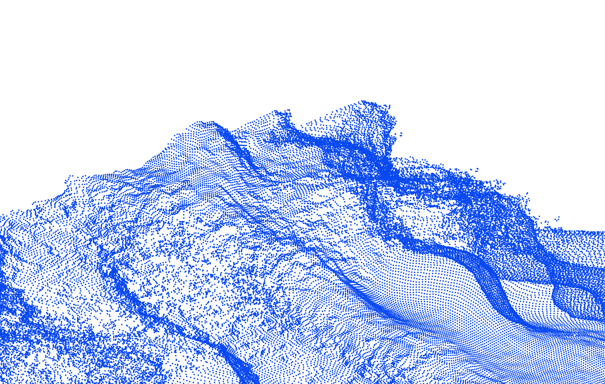
Building blocks
The term new data technologies captures the many innovations that underlie ODSIs. Much has been written about ‘Big Data’, but that term directs attention to data alone and risks masking the steps and skills required to collect, analyse, interpret and visualize it. New data technologies include data, but also:
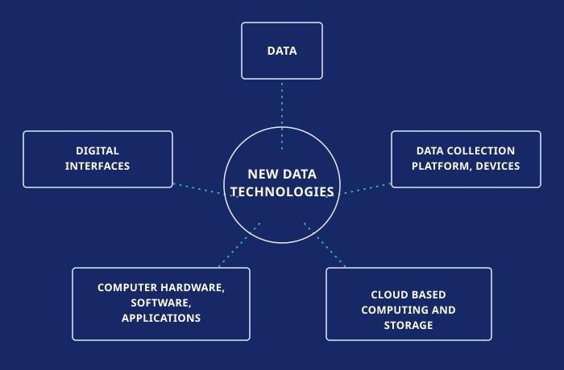
The Digital Oceans Governance Lab is co-led by Elizabeth Havice (UNC–Chapel Hill) and Lisa Campbell (Duke University), bringing together human geographers, marine ecologists, geospatial data scientists and information scientists.
Uses the lens of governance to explore distributional outcomes in marine resource sectors, food systems and global value chains, with 15+ years researching the global tuna industry and oceans governance, and advisory roles for Pacific Island governments.
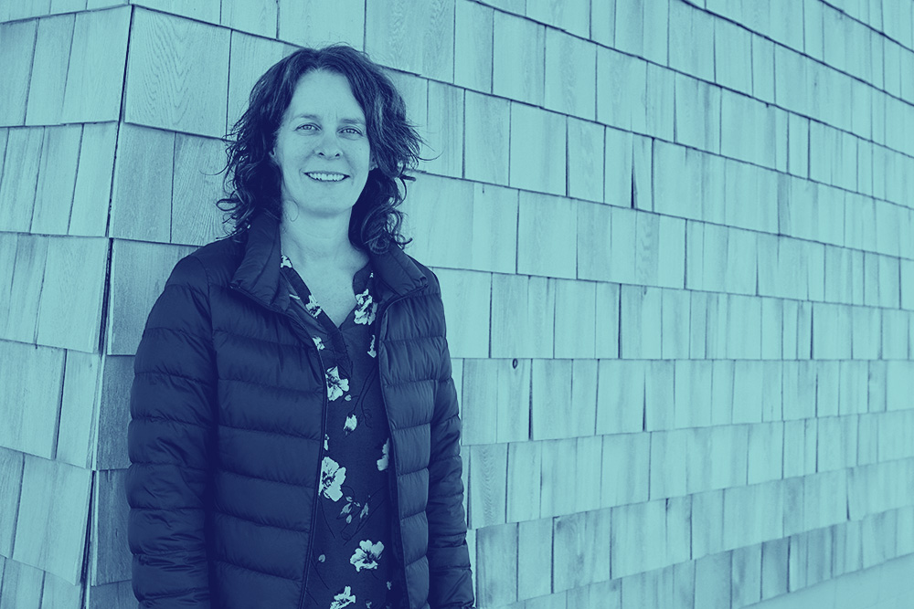
Studies oceans governance across scales (international, national, local) and issues (protected species, fisheries, MPAs, tourism), with particular interest in how science and non-state actors inform governance outcomes. Based at the Duke Marine Lab.
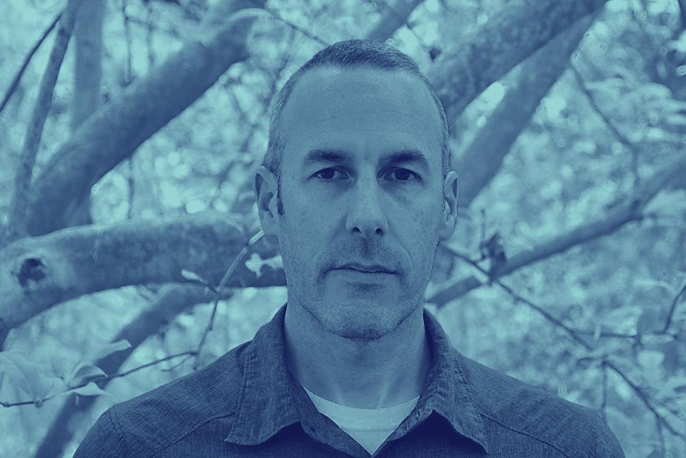
Marine biologist advising on Atlantic and Pacific bluefin tuna stock assessment at ICCAT and IATTC, and on the US delegation’s ICCAT Advisory Committee.
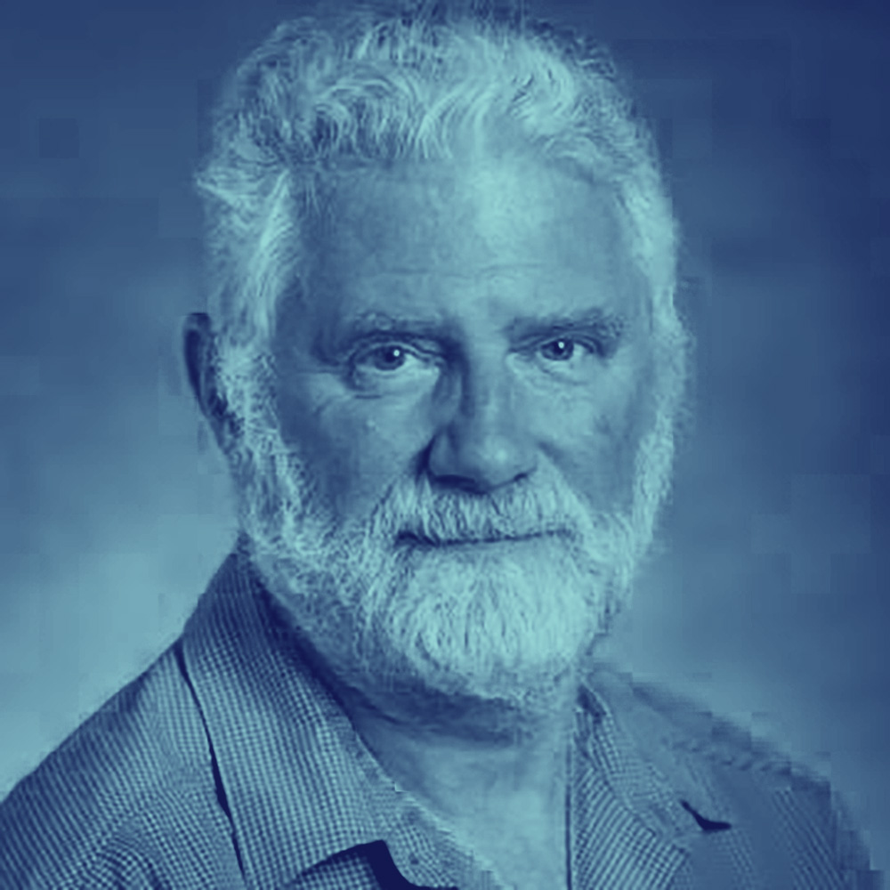
Directs the Geospatial Analysis Program and Marine Geospatial Ecology Lab; advises OBIS, GOBI, GEO-BON and the UN Decade of Ocean Science.
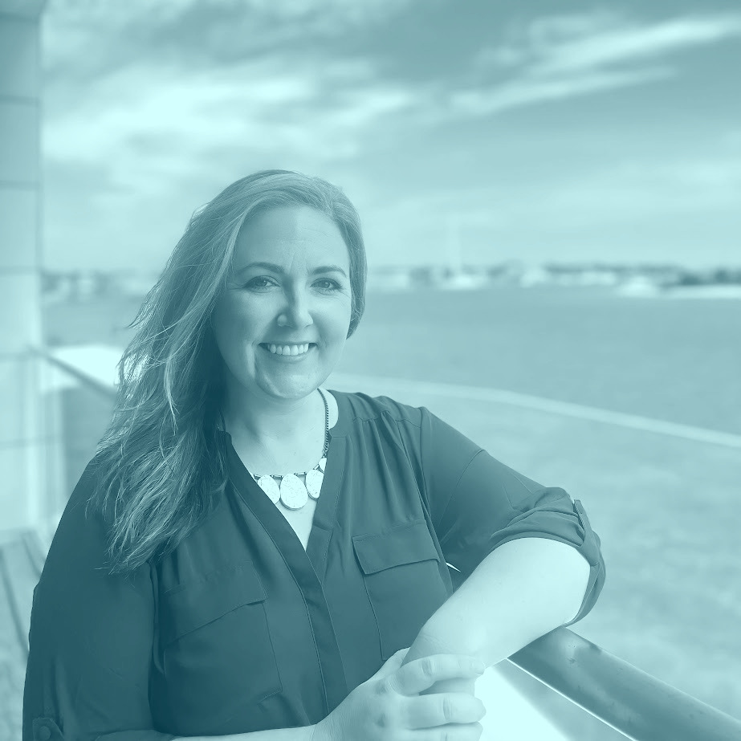
Researches the blue economy as a post-disaster recovery strategy in Grand Bahama after Hurricane Dorian, and its implications for ocean conservation and governance.
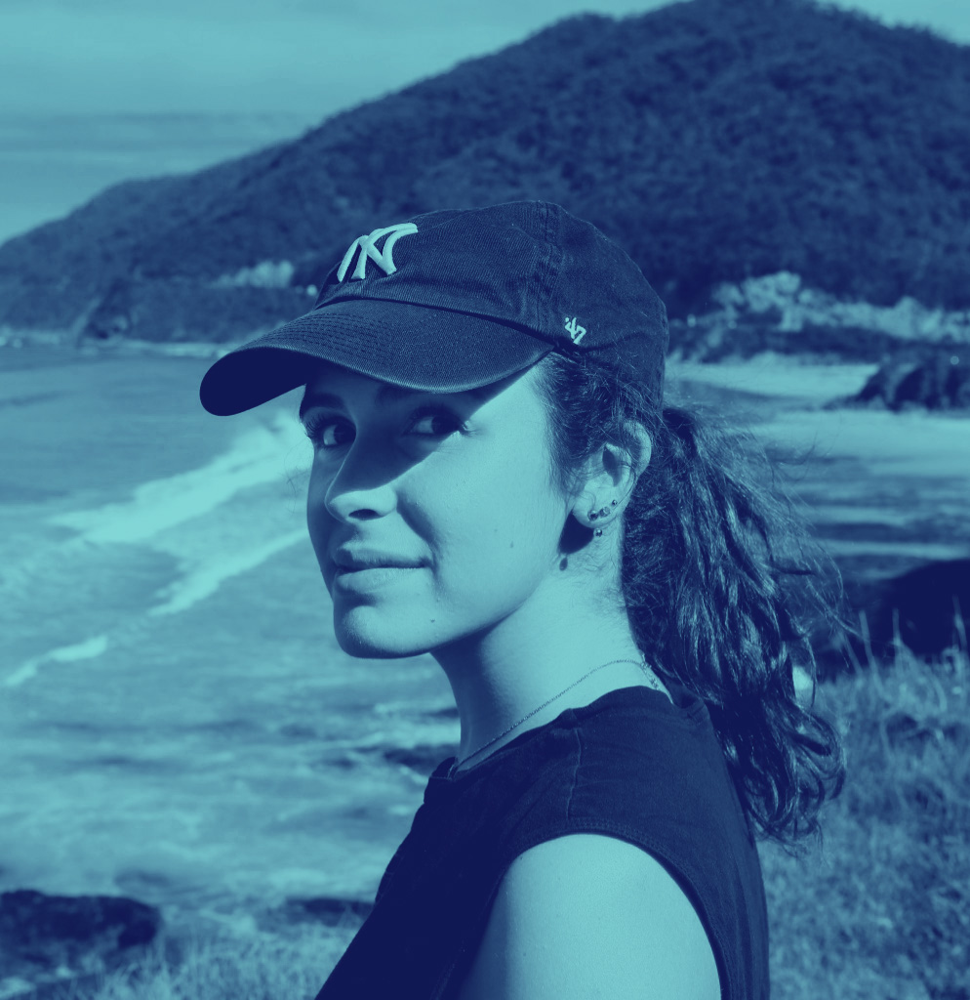
Studies high seas fisheries, corporate power and RFMOs using Global Fishing Watch data to calculate fishing effort for corporate actors.
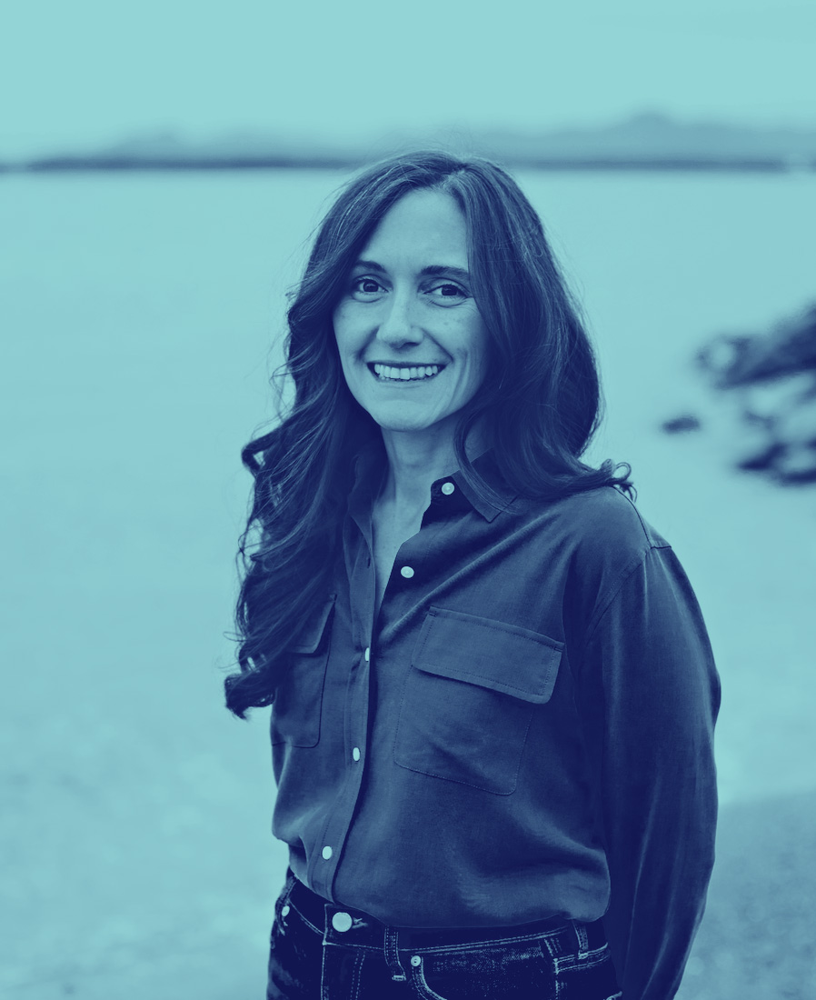
Worked on science, digital technologies and data infrastructure in environmental governance; now at Sandia National Laboratories.
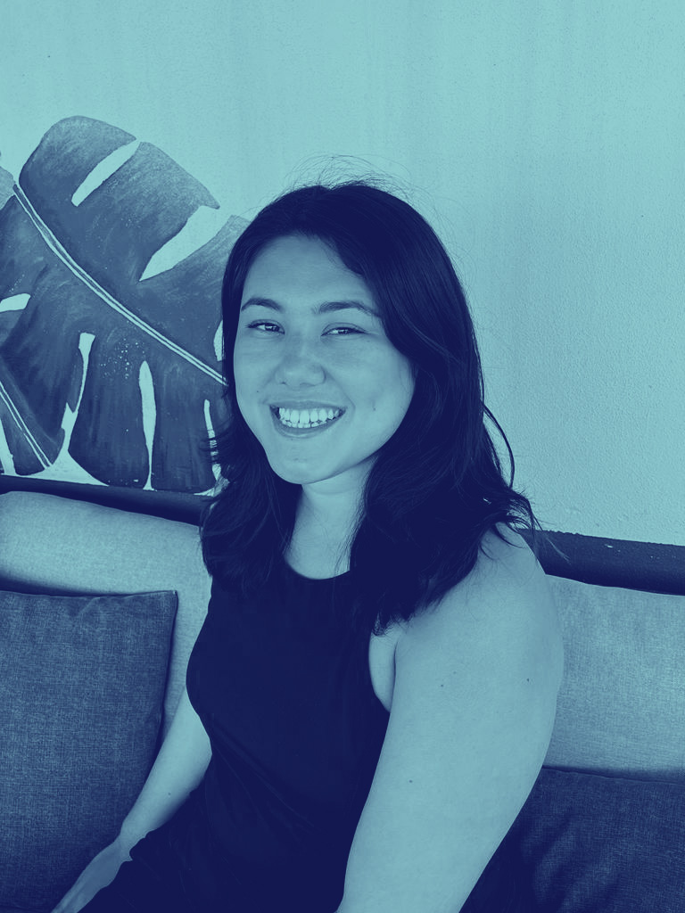
Worked on the ODSI catalog; now a paralegal at the Southern Coalition for Social Justice.
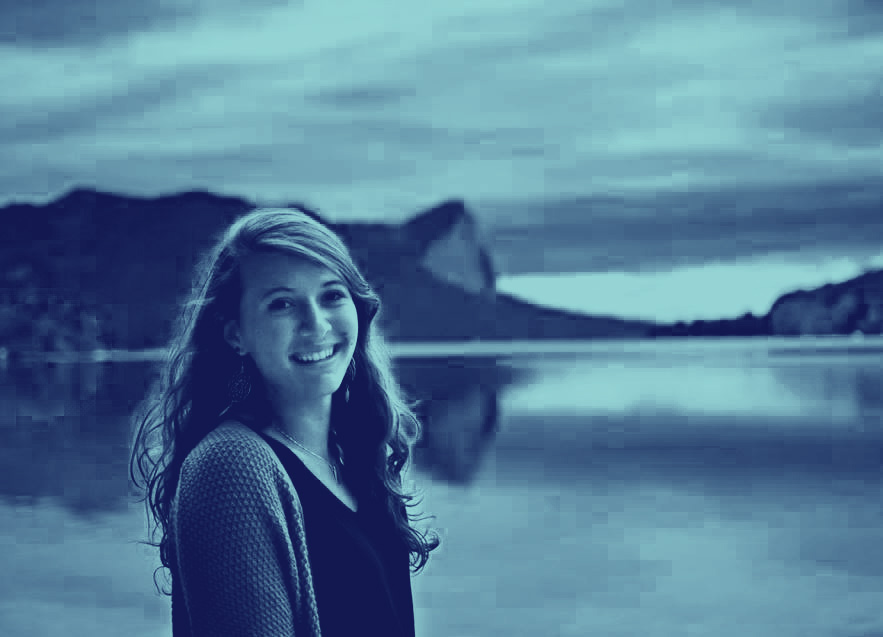
Now a John A. Knauss Marine Policy Fellow at the NOAA Fisheries Office of the Assistant Administrator.
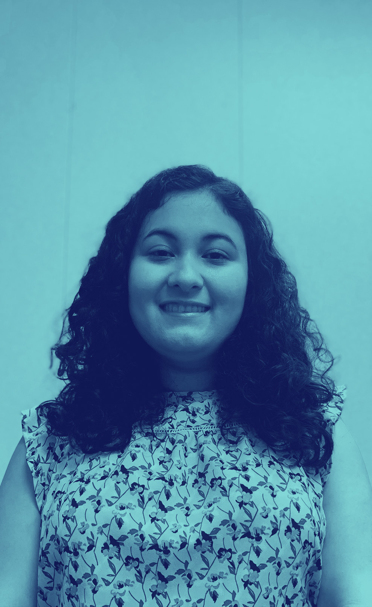
Pre-Environmental Health Sciences and Geography double major contributing to the ODSI catalog, with plans to study environmental health disparities in rural North Carolina.
Maps declared relations between ODSIs to understand world-making patterns along lines of funding and partnership.
What impacts do new data technologies have in transboundary oceans governance? We have explored the role of new data technologies in managing two iconic marine species — Atlantic bluefin tuna and marine turtles — examining the policy implications of relying on these products to ‘resolve’ scalar mismatches in oceans management.
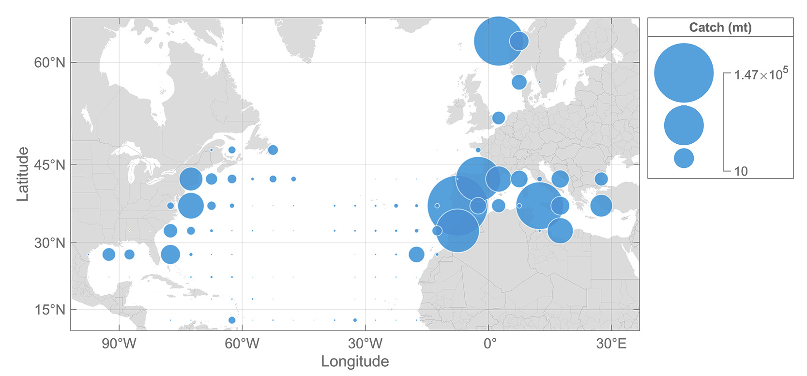
What organizations are advancing new data technologies in oceans governance and what do they aim to do? Our work contributes to situating Ocean Data Science Initiatives (ODSIs) as actors in oceans governance. To understand what ODSIs are and what they do in global and regional oceans governance, we assembled two versions of an open-access catalog of ODSIs focusing on fisheries extraction, biodiversity conservation, and enhancing basic scientific knowledge. We identified roughly 100 ODSIs and coded key features in two publicly available datasets with the following elements: (1) data infrastructure, (2) organizational structure, (3) the ocean worlds they create, and (4) the policy and governance ‘solutions’ they promote. We have published an analysis of the findings across the data set in the journal Earth Systems Governance.
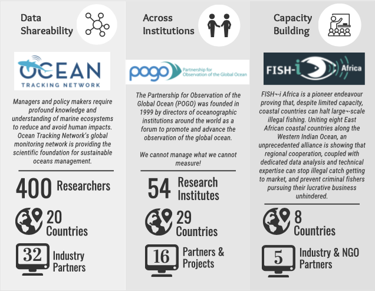
Mapping has always played an important role in representing the oceans, so what ocean worlds are ODSIs making in the digital age? Two elements of our project address this question. In one, we analyzed 100+ maps that ODSIs made with new data technologies: research products include a paper in Political Geography and our open access data set that includes all of the maps we analyzed. In a second, we engaged with efforts to ‘fully map’ the seabed; results are in a paper in Global Environmental Politics (forthcoming).
Scientists and policy makers often look to new data technologies as a tool to oceans governance. We conducted collaborative event ethnography at the 2026 One Ocean Science Congress and United Nations Oceans Congress to explore this intersection.
We used a case of ODSI Global Fishing Watch, specifically its research program, to situate the general governance functions of ODSIs at the intersection of new data technologies, ocean sciences, and the potential for improved policy and management. We explored the first phase of Global Fishing Watch scientific research to understanding how the specifics of data and technology coproduce possibilities for science and resulting policy and management recommendations.
Our work has been supported by the National Science Foundation Human-Environment and Geographical Sciences Program and the National Geographic Conservation Trust.
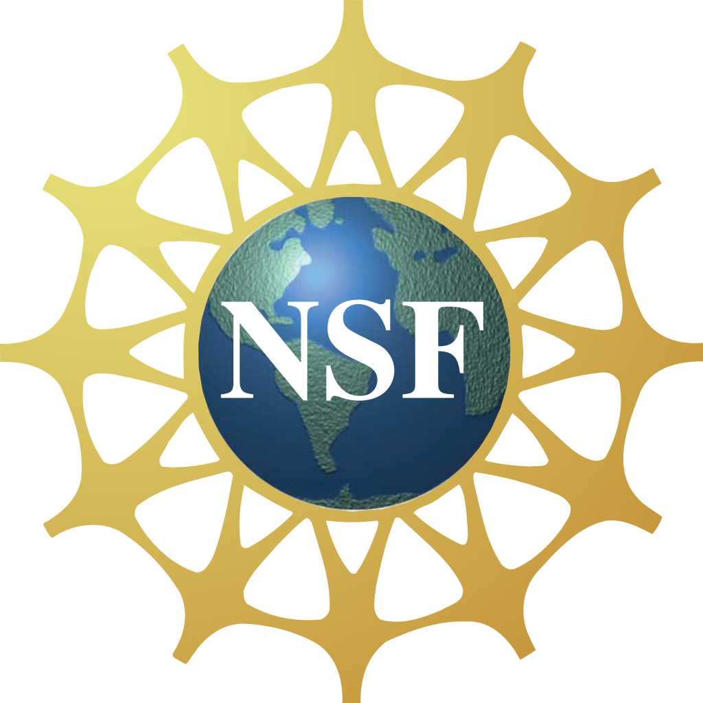
Please type your message and email address to contact us.